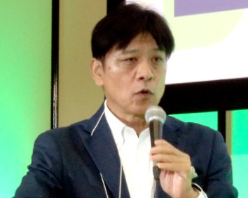

お話しできるテーマ
営農型太陽光発電と、農地の未来
農地の上で発電し、その収益で農業を続ける。ソーラーシェアリングを、制度の話だけでなく、事業として成り立たせる現場の視点からお話しします。資産保有型のビジネスモデル、環境再生型農業との組み合わせ、自治体や地域農家との合意形成まで。
地域の脱炭素と、官民の共創
環境省「脱炭素先行地域」への米原市・滋賀県との共同提案、袋井市との連携協定など、自治体と企業が一緒に地域をつくる仕組みについて。計画づくりから事業会社の設立、運営までの実際をお伝えします。
大企業から、新しい事業をつくる
パイオニアとヤンマーで、数多くの新規事業を立ち上げてきました。リーンスタートアップやデザイン思考を大企業の中でどう回すか、CVCとスタートアップ投資、海外での事業実証。うまくいったことも、いかなかったことも、正直にお話しします。
主な講演・登壇

このほか、自治体・業界団体・大学などでの講演多数。寄稿・取材もお受けしています。
いま、取り組んでいること
SAVE THE FARMS by YANMAR
環境再生型農業と営農型太陽光発電を組み合わせ、担い手不足や耕作放棄地から未来の農地を守るプロジェクト。2030年度に全国1,000haでの展開を目指しています。
プロジェクトサイト ↗
事業会社2社を設立し、代表に
ヤンマーセーブザファームズ滋賀合同会社、ヤンマーセーブザファームズ岡山合同会社を設立。滋賀県栗東市の水田では、営農型太陽光発電の圃場が竣工し、開所式を迎えました。
静岡県袋井市と連携協定
農地の利活用や荒廃農地の再生、担い手とのマッチング、環境負荷を減らす技術の普及などで、市と連携していきます。
米原市「ECOVILLAGE構想」
米原市・滋賀県とともに環境省「脱炭素先行地域」に選定。再生可能エネルギーによる地域づくりの事業計画を担いました。
キャリアの、三つの時代
地図をつくった時代
電気通信大学で通信工学を学び、パイオニアの技術研究所へ。AV機器のIC設計、PCの組込みソフト、社内外のインターネットサービスを手がけたあと、地図データベースの子会社に移り、地図サービス「MapFan」の商品企画を率いました。
クルマをつなげた時代
カーナビをネットワークにつなぐ「コネクティッド」の黎明期に、企画部長・取締役としてIoTサービスを企画。クルマ同士が渋滞情報を共有する仕組みは、国内の主要自動車メーカーに採用されました。
農業と共創の時代
50歳でヤンマーへ。IoT戦略の立案から始まり、新規事業の仕組みづくり、海外での事業実証、CVCでのスタートアップ投資を経て、いまは農業とエネルギーをつなぐ事業の責任者を務めています。
- 事業創出部：新規事業プロセスを構築、シリコンバレーのスタートアップへ投資
- コネクティッドビジネス室長：トルコ・インドネシア・ブラジル・インドで5つの新規事業を実証
- イノベーションセンター部長：建機・農機シェアリング、AI/IoTグリーンハウスなど8プロジェクト
- ヤンマーベンチャーズ取締役：スタートアップ投資と事業シナジー
- 共創推進室長 → ヤンマー・サステナブル・ファーム：脱炭素先行地域、SAVE THE FARMS by YANMAR
知見とネットワーク
新規事業開発
構想から事業性検証、テストマーケティング、事業会社の設立・運営まで。IoT・ネットサービスで18年以上。
脱炭素・再エネ
営農型太陽光発電の事業モデル、自治体との共同計画、PPA、カーボンクレジット。
オープンイノベーション
CVC運営、スタートアップ投資、大企業・自治体・大学との共創プロジェクト。
ネットワーク
自動車・車載機器メーカー、通信キャリア、ネットサービス企業、省庁・自治体、大学・研究機関。
講演・寄稿のご依頼
講演、パネルディスカッション、寄稿、取材のご相談は、LinkedInのメッセージからお気軽にどうぞ。
LinkedIn でメッセージを送る現在は、所属企業の業務としてお受けしています。内容によっては会社を通じたご案内となります。